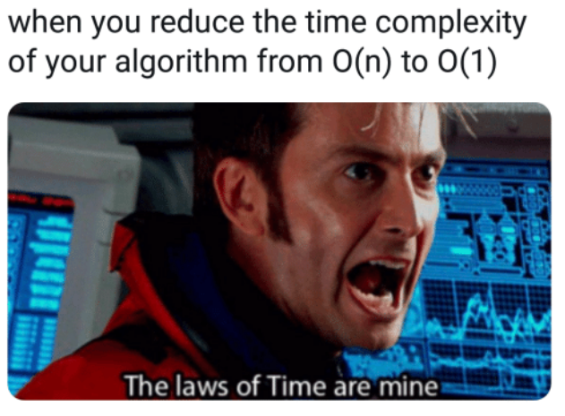

Chapitre 2: Complexité d'un algorithme⚓︎

La complexité d'un algorithme est une notion qui nous éclaire sur la manière dont cet algorithme va être sensible à la taille des données passées en paramètre. Il y a plusieurs types de complexités étudiables (nombre d'opérations, temps nécessaire, espace-mémoire nécessaire...).
En NSI, nous nous contenterons d'estimer (lorsque cela est possible) le nombre d'opérations effectuées par l'algorithme, et nous mesurerons les temps d'exécution de ces algortihmes.
Nous observerons surtout comment évolue ce temps d'exécution en fonction de la taille des données passées en paramètre (la taille d'une liste, par exemple). Cela nous permettra dans ce cours de classer nos algorithmes en deux catégories : les algorithmes de complexité linéaire et ceux de complexité quadratique.
1. Complexité linéaire⚓︎
1.1 Exemple⚓︎
Exemple d'algorithme
Votre travail est de mettre des bulletins dans des enveloppes pour une campagne de communication.
L'algorithme en jeu ici est «je prends un bulletin, je le plie, je le mets dans l'enveloppe, je ferme l'enveloppe».
On suppose que vous travaillez à un rythme constant.
Le premier jour, on vous donne \(n\) enveloppes à remplir. Vous mettez un temps \(T\) pour les traiter.
Le deuxième jour, suite à l'absence d'un employé, on vous donne le double d'enveloppes, soit \(2n\) enveloppes. Combien de temps allez vous mettre pour les traiter ?
Réponse
Cela prendra deux fois plus de temps, donc \(2T\).
1.2 Vocabulaire⚓︎
On dit que l'algorithme ci-dessus est de complexité linéaire.
Complexité linéaire 
Les expressions suivantes sont équivalentes :
- L'algorithme est de complexité linéaire.
- L'algorithme est d'ordre n.
- L'algorithme est en \(O(n)\)
(«grand O de n»)
Toutes ces formulations renvoient à la même idée : le nombre d'opérations nécessaires (et donc le temps nécessaire à la terminaison de l'algorithme) évolue proportionnellement avec le nombre de données à traiter.
1.3 Formulation mathématique⚓︎
Si un employé A met 3 secondes par enveloppe, on aura \(T_A=3n\).
Si un employé B met 20 secondes par enveloppe, on aura \(T_B=20n\).
On retrouve la formulation mathématique d'une fonction linéaire \(f\).
Ici, la fonction \(f_A\) serait \(f_A(x)=3x\), la fonction \(f_B\) serait \(f_B(x)=20x\)
Dans les deux cas l'algorithme a la même complexité (linéaire donc). Ce qui compte est le fait que pour chacun des employés, avoir deux fois plus d'enveloppes prendrait deux fois plus de temps.
1.4 Vérification expérimentale⚓︎
On considère la fonction ci-dessous :
def fabrique(n):
liste = []
for _ in range(n):
liste.append("ok")
return liste
Le code ci-dessous va mesurer le temps d'exécution de cette fonction avec deux paramètres différents : la valeur 400 puis la valeur 800.
import time
t0 = time.time()
lstA = fabrique(400)
print("temps pour une liste de taille 400 :", time.time() - t0)
t0 = time.time()
lstB = fabrique(800)
print("temps pour une liste de taille 800 :", time.time() - t0)
Résultats de l'exécution :
temps pour une liste de taille 400 : 2.384185791015625e-05
temps pour une liste de taille 800 : 4.2438507080078125e-05
Interprétation :
Doubler la taille du paramètre d'entrée a eu pour effet de doubler (quasiment) le temps d'exécution. Cela semble indiquer que la complexité de cette fonction est linéaire.
En observant l'algorithme, nous pouvons confirmer cette supposition : le nombre d'opérations de la boucle for est égal au paramètre n, et est donc directement proportionnel à la valeur de ce paramètre.
2. Complexité quadratique⚓︎
2.1 Exemple⚓︎
Exemple d'algorithme
 Vous avez l'habitude de tondre la pelouse de votre terrain carré, de côté \(n\). Cela vous prend un certain temps \(T\).
Vous avez l'habitude de tondre la pelouse de votre terrain carré, de côté \(n\). Cela vous prend un certain temps \(T\).
Votre voisin vous propose de venir chez lui tondre son terrain carré de côté \(2n\).
Combien de temps cela va-t-il vous prendre pour tondre le terrain de votre voisin ?
Réponse
Cela vous prendra 4 fois plus de temps.
2.2 Vocabulaire⚓︎
On dit que l'algorithme ci-dessus est de complexité quadratique.
Complexité quadratique
Les expressions suivantes sont équivalentes :
- L'algorithme est de complexité quadratique.
- L'algorithme est d'ordre n au carré.
- L'algorithme est en \(O(n^2)\)
(«grand O de n carré»)
Toutes ces formulations renvoient à la même idée : le nombre d'opérations nécessaires (et donc le temps nécessaire à la terminaison de l'algorithme) évolue proportionnellement avec le carré du nombre de données à traiter.
Les algorithmes quadratiques sont moins «intéressants» que les algorithmes linéaires, car ils vont consommer beaucoup plus de ressources. Lors de l'élaboration d'un algorithme, on va toujours essayer de trouver l'algorithme ayant la complexité la plus faible possible.
2.3 Vérification expérimentale⚓︎
On considère la fonction ci-dessous :
def tables(n):
for a in range(n):
for b in range(n):
c = a * b
Le code ci-dessous va mesurer le temps d'exécution de cette fonction avec deux paramètres différents : la valeur 100 puis la valeur 200.
import time
t0 = time.time()
tables(100)
print("temps pour n = 100 :", time.time() - t0)
t0 = time.time()
tables(200)
print("temps pour n = 200 : ", time.time() - t0)
Résultats de l'exécution :
temps pour n = 100 : 0.0003533363342285156
temps pour n = 200 : 0.0014693737030029297
Interprétation :
Doubler la taille du paramètre d'entrée a eu pour effet de quadrupler le temps d'exécution. Cela semble indiquer que la complexité de cette fonction est quadratique, car \(2^2=4\).
En observant l'algorithme, nous pouvons confirmer cette supposition : le nombre d'opérations des deux boucles for est égal à n^2.
3. Complexité constante⚓︎
Il peut arriver (mais c'est rare) que la complexité d'un algorithme soit indépendante de la taille des données à traiter.
Dans ce cas, c'est souvent une très bonne nouvelle.
Observons l'accès au 1er élément d'une liste :
Complexité constante
Les expressions suivantes sont équivalentes :
- L'algorithme est de complexité constante.
- L'algorithme est d'ordre 1.
- L'algorithme est en \(O(1)\)
(«grand O de 1»)
Toutes ces formulations renvoient à la même idée : le nombre d'opérations nécessaires (et donc le temps nécessaire à la terminaison de l'algorithme) est constant quelle que soit la taille des données d'entrée de l'algorithme.